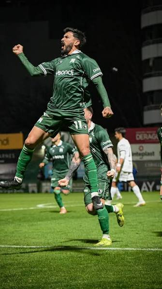
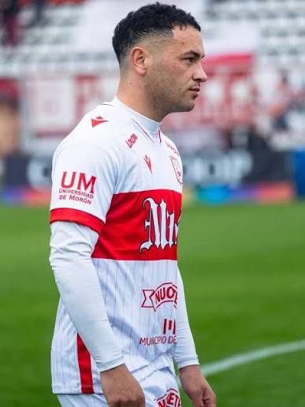
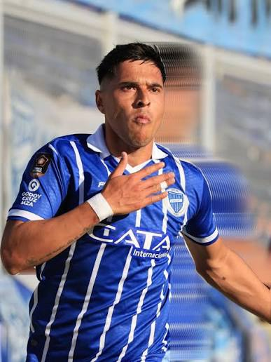

Fecha 32 (Zona "A")



Club Ferro Carril Oeste
Ferro (durisima derrota contra deportivo Madryn)
El viernes 2 de Octubre a las 19hs se enfrentaron Ferro contra Madryn, en un partido importante para ambos equipos
Contacto
Ubicacion: Caballito CABA
Redes Sociales: @fulboestadisticas